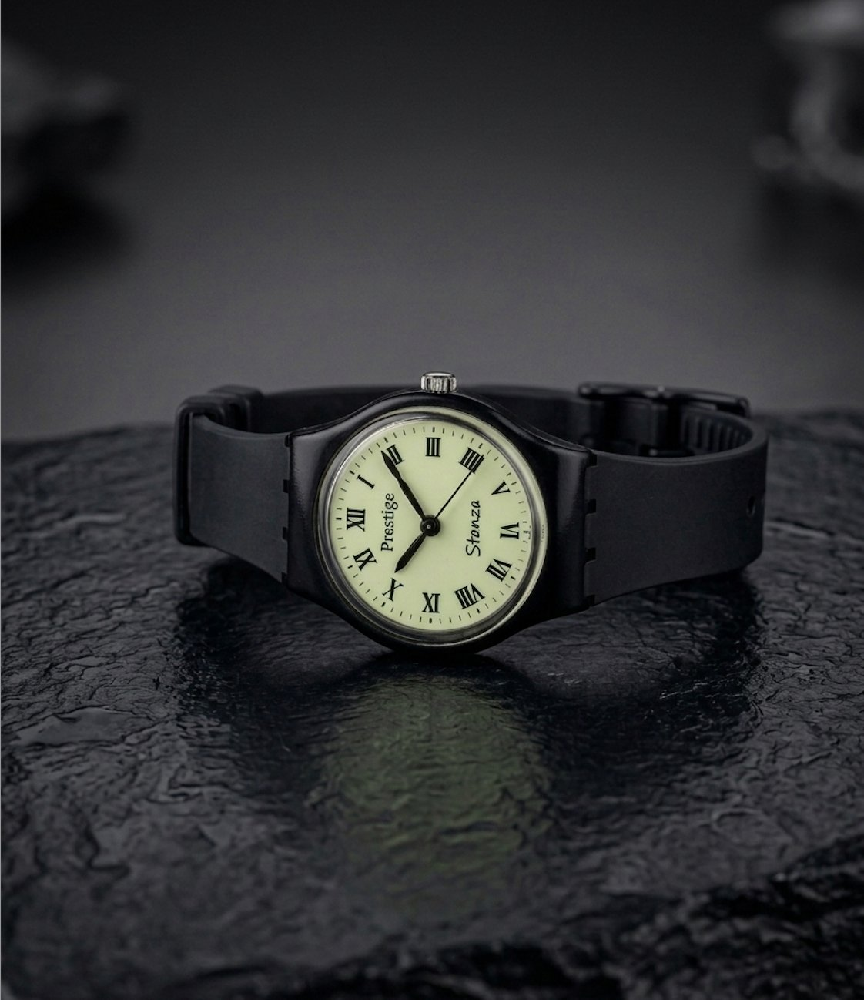
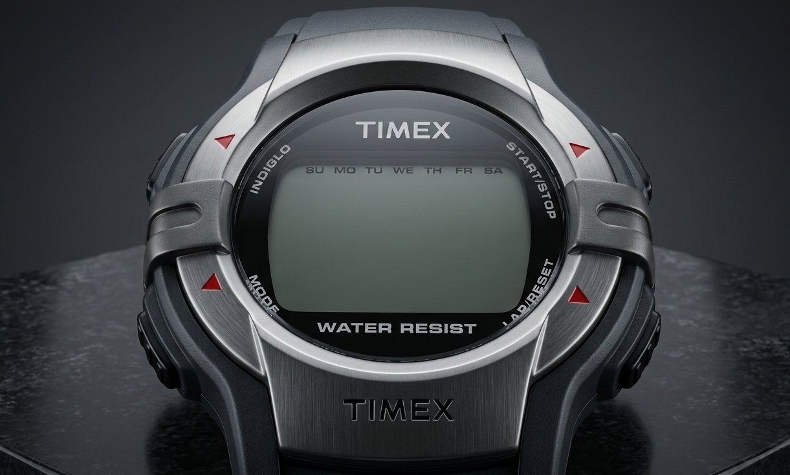

Watches mean different things at different times. They are rarely just about tracking hours and minutes — they are physical markers of who we are and where we are in life.
Watches rarely exist just to track hours and minutes. More often, they become markers of who we are and where we are in life.
Think about the first time you strapped one on. For a kid, a watch is a milestone. It's their very first serious gadget — not a toy, but something that actually does a real thing in the adult world. From there, the narrative just keeps evolving.
In a silent exam hall, a watch measures anxiety.
On a running track, it becomes the opponent.
Underwater, it becomes survival.
In a boardroom, it becomes a statement.
But perhaps the most powerful shift happens when a watch transitions from a present tool to a future legacy. For a father, a timepiece becomes something carefully preserved to pass on. And for the kid who eventually inherits it, it becomes an asset holding an emotional value far surpassing the sum of its gears, dials, and metal.
I grew up observing this quiet relationship with timepieces in my own home. For the longest period, my father wore a black dial Titan, eventually moving through a gold HMT Quartz and a white dial steel Titan, before strapping on a coffee-brown dial Fossil Machine with a black PVD bracelet. And my mother? She still carries a 1980 HMT Asha, wearing it with the exact same joy of a little girl who once received it from her own father. Over the years, she added a classic Titan, an elegant Titan Raga, and recently a Fossil to her own rotation.
It was against this backdrop that my own fascination started early. As a toddler, my wrist carried a simple digital watch with a Mickey Mouse face. But the real spark happened on my 6th birthday, when my grandfather gave me my first analog timepiece: a Prestige watch featuring classic Roman numerals and a white luminescent dial. Imagine the pure excitement of a six-year-old boy enthusiastically showing off that glowing watch to his classmates.

The Prestige Stanza — the watch that started it all
Images AI-retouched for a professional finish
From there, my wrist became a timeline of growing up. A Timex digital arrived for the 12-year-old boy. That was followed by a Titan to celebrate scoring decently well in high school, and eventually a Fastrack to navigate the college years.

The Timex — a milestone for the 12-year-old
Images AI-retouched for a professional finish
Then came the watch I was genuinely hyped about: a black and gold G-Shock GBA400. This wasn't just another watch; it was the very first one I bought for myself with my own salary. And what a beautiful, ugly watch it is. To this day, it remains my reliable daily beater.
The collection has evolved since then, most notably bringing in a couple of Seikos — a Presage and, more recently, a stealth black Seiko 5 Sports. What beautiful watches they have been. But it would be entirely unfair to cram them into this introduction. They carry their own authentic stories and mechanics, and I'll be giving them the spotlight they deserve in my coming blogs.
But that is just my timeline. The beauty of this hobby is that everyone has their own version of this story, because we all look at our wrists through entirely different lenses. For some, a watch is pure luxury or a fashion accessory. For others, it's a purpose-built tool or simply an unbreakable habit.
Maybe it's just one elusive piece.
It could be an accessible legend from Casio or Timex.
A nostalgic piece from HMT or Titan.
Or something aspirational like a Rolex or Patek Philippe.
The brand on the dial is secondary to the story it tells. This blog is about exploring those different meanings, unpacking that wish list, and talking about the incredible stories strapped to our wrists.
Welcome to the conversation.